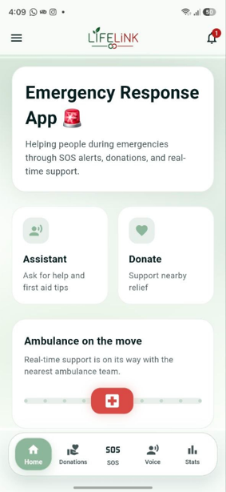
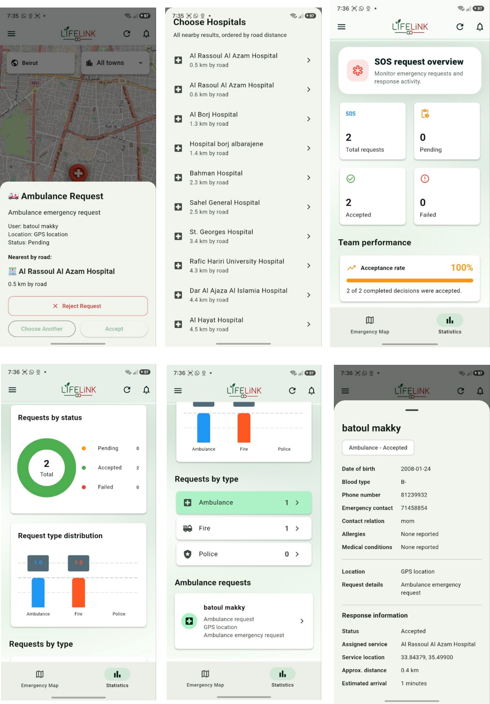
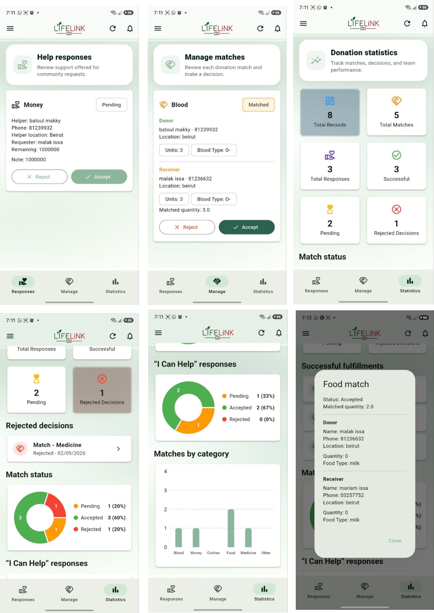
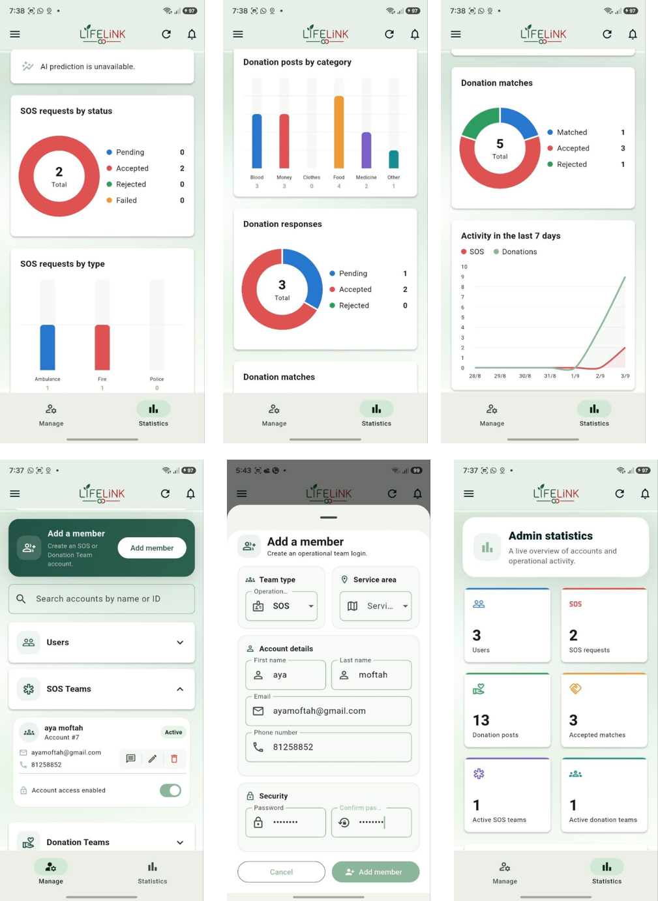

Mobile feature development, and project coordination
Context
Emergency response system
Timeline
6-week
Team
University project
01 / The problem
Bridging Communication Gaps During Emergencies.
During wars, disasters, and other emergencies, internet access can become unstable or completely unavailable. In these situations, people may be unable to send an SOS request even when they urgently need help.
LifeLink was designed to reduce this gap by allowing emergency requests to be relayed through nearby devices until they reach a phone with internet access. It also gives nearby people important information such as the emergency type, location, and distance so they can choose to assist while professional responders are still on the way.
The platform also addresses another challenge: people who need or want to offer donations may not feel comfortable contacting strangers directly. LifeLink manages and matches donation requests and offers through the system, allowing users to request or provide support more safely and privately.
Finally, the AI first-aid assistant provides step-by-step guidance and instructional content to help people take appropriate action during an emergency before medical or emergency teams arrive.
02 / Platform roles
How the system supports each user group.
01
User
Users can quickly report emergencies by selecting the incident type and sending an SOS request with the required details, current location, and GPS coordinates. They can also access first-aid guidance, track emergency updates, and use donation and help-request features.

02
SOS Team
The SOS team receives and manages emergency requests through a dedicated dashboard. Team members can review the emergency type, location, request status, and other important details to coordinate the appropriate response.

03
Donation Team
The donation team manages user requests and offers for support such as blood, food, and other essential needs. The dashboard helps organize available assistance and connect requests with suitable offers.

04
Admin
The admin manages the overall platform, including users, team accounts, system activity, and request information. The dashboard also provides statistics and insights that help monitor platform usage and emergency activity.

03 / App walkthrough
Every screen. At your own pace.
LifeLink is designed to support multiple emergency workflows, from user reporting to team coordination and donation management. The app can be used for Medical, Fire, and Police emergencies, with Medical covering ambulance and hospital support.
The SOS flow is organized around the main emergency categories used in the system: Medical, Fire, and Police. Under Medical, the project supports ambulance and hospital-related assistance, which helps users select the most relevant service for their situation.
Offline resilience
When there is no internet access, the mobile app can forward the SOS request through nearby phones until it reaches a connected device. This makes the request more reliable in emergency conditions and allows nearby users to respond while the official support system is being reached.
05 / Reflection
What I learned. What comes next.
Outcome & learning
The project taught me how important it is to design emergency systems around speed, clarity, and communication. A good emergency platform should not only collect information, but also support the decision-making process for both the person in need and the team responding.
Next steps
The next step would be expanding the platform with stronger real-time coordination, more complete notification flows, and broader support for response analytics. The goal would be to improve reliability while keeping the system practical and easy to use in urgent situations.